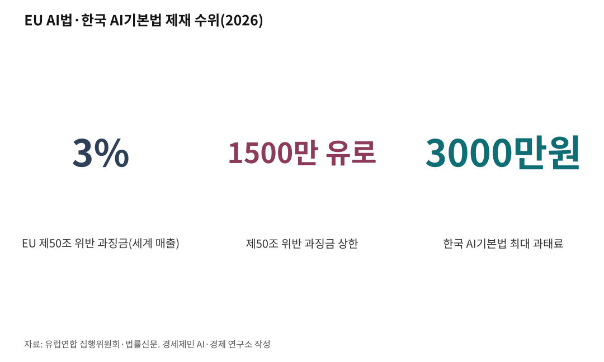

[주간 AI 동향] 유럽, 8월 2일부터 AI 생성물에 표시 의무
챗봇과 딥페이크와 AI 기사에 붙는 알림, 어기면 세계 매출 3% 과징금
2027년 12월로 미뤄진 고위험 AI 규제, 1월에 먼저 시행한 한국 기본법
유럽연합 인공지능법(AI법) 제50조가 2026년 8월 2일부터 적용됐다. AI가 만든 것에는 AI가 만들었다고 알리라는 조항이다.
유럽 시장에 내놓는 AI는 이제 자기 정체를 숨기지 못한다.
한국 기업도 걸린다. 회사가 유럽 밖에 자리해도 그 AI가 내놓은 결과물을 유럽에서 쓰면 이 법이 적용된다. 국민에게는 화면에서 보는 것이 사람이 만든 것인지 가리는 문제이고, 투자자에게는 기업이 물어야 할 비용 문제다.
1. 알려야 하는 자리가 넷이다
유럽연합 집행위원회가 정리한 의무는 네 갈래다. 사람과 직접 주고받는 AI, AI가 만든 사진과 소리와 영상과 글, 감정을 읽거나 생체 정보로 사람을 분류하는 AI, 딥페이크다.
챗봇과 AI 비서를 만든 쪽은 이용자가 첫 대화부터 AI라는 사실을 알게 설계해야 한다. 누가 봐도 AI인 것이 분명하면 알리지 않아도 된다. 집행위원회는 이 예외를 좁게 해석하라고 밝혔다. 알리지 않는 만큼 이용자가 정보를 덜 받기 때문이다.
AI가 만든 사진과 영상과 소리에는 기계가 읽는 표시를 심어야 한다. 사람 눈에 띄지 않아도 기계가 읽어 AI 생성물임을 가려낼 수 있어야 한다.
이 조항은 위험 등급을 가리지 않는다. AI법은 AI를 금지와 고위험과 제한적 위험과 최소 위험 넷으로 나눈다. 제50조 표시 의무는 그 등급과 상관없이 챗봇과 딥페이크와 생성형 AI에 바로 걸린다.

2. 딥페이크는 눈에 보이게 알린다
딥페이크를 쓰는 쪽은 보는 사람이 처음 접하는 시점에 알려야 한다. 집행위원회는 기계가 읽는 표시만으로는 이 의무를 다한 것이 아니라고 밝혔다. 눈에 보이는 표시나 귀에 들리는 안내가 따로 있어야 한다.
개인이 재미로 만들어 사회관계망서비스에 올리는 것은 이 법 밖이다. 다만 그 일로 꾸준히 돈을 벌면 직업 활동으로 보고 법을 적용한다. 회사 지시로 일하는 직원은 따로 책임을 지지 않는다. 애니메이터와 웹디자이너와 콘텐츠 제작자와 기자가 그렇다.
예술과 창작과 풍자와 허구가 분명한 작품은 달리 다룬다. 작품을 보고 즐기는 것을 해치지 않는 방식으로만 알리면 된다.
공익을 다루는 AI 생성 글에도 표시 의무가 붙는다. 정치와 행정과 사법, 기본권, 공공보건, 소비자 안전, 경제와 금융이 그 범위다.
빠져나가는 길이 하나 있다. 사람이 내용을 검토했거나 편집 책임을 지면 표시하지 않아도 된다. 다만 맞춤법을 고치는 정도는 검토로 쳐 주지 않는다.
3. 고위험 규제는 1년 4개월 미뤄졌다
같은 8월 2일에 시작될 예정이던 규제가 하나 더 있었다. 채용과 교육과 금융, 공공서비스, 사법행정에 쓰는 고위험 AI 규제다.
유럽연합은 이것을 2027년 12월 2일로 미뤘다. 의료기기와 자동차처럼 제품에 들어가는 고위험 AI는 2028년 8월 2일로 옮겼다. 유럽연합 이사회는 2026년 6월 29일 이 개정을 최종 승인했다. 개정을 담은 법 이름은 디지털 옴니버스다.
한-EU 연구협력센터는 2026년 3월 보고서에서 갈린 평가를 전했다. 집행위원회는 혁신을 막지 않으려는 조치라고 설명했고, 유럽 시민사회는 디지털 권리와 개인정보 보호 수준이 낮아진다고 비판했다.
4. 한국은 1월에 먼저 시작했다
한국은 인공지능 기본법을 2026년 1월 22일에 시행했다. 유럽이 고위험 규제를 미루면서, AI를 포괄하는 기본법으로는 세계에서 먼저 발효한 법이 됐다.
같은 보고서는 두 법의 결이 다르다고 짚었다. 유럽은 위험도에 따라 규제를 달리하고, 한국은 진흥과 신뢰 확보를 함께 놓는다. 한국은 고영향 AI에 안전 조치를 요구하고 AI가 만든 콘텐츠에 표기 의무를 둔다.
7월 21일에는 개정법이 시행됐다. 그에 앞서 7월 14일 국무회의가 시행령 개정안을 통과시켰다. AI 제품과 서비스 확인 제도가 이때 새로 생겼다.
국가와 지방자치단체와 공공기관은 물건을 사거나 용역을 맡길 때 AI 제품과 서비스를 먼저 고려해야 한다. 기술 심사를 거쳐 확인서를 받으면 조달에서 우대를 받는다. 적격 심사 신인도에 기술점수 1.5점이 붙는다.
5. 과징금 매출 3%, 과태료 3000만원
유럽은 제50조를 어기면 최대 1500만 유로나 전 세계 연매출 3% 가운데 큰 쪽을 물린다. 1500만 유로는 약 260억원이다. 1유로 1730원(2026년 상반기 평균)을 적용했다. 아예 금지된 AI를 쓰면 3500만 유로나 매출 7%까지 올라간다.
한국 인공지능 기본법 제재는 최대 3000만원 과태료다. 집행도 갈린다. 유럽은 회원국 시장감시당국이 맡고 범용 AI 위에 올린 시스템만 유럽연합 AI 사무국이 직접 본다. 한국은 국가인공지능전략위원회가 총괄한다.
시간을 벌어 둔 자리도 있다. 8월 2일 전에 시장에 나온 AI는 표시와 탐지 의무를 2026년 12월 2일까지 미뤘다. 그 전에 만들어진 콘텐츠는 소급해 표시하지 않아도 된다.
새로 막는 것도 있다. 동의 없이 만든 성적 이미지와 아동 성착취물을 생성하는 AI는 2026년 12월 2일부터 금지된다.
스탠퍼드대학이 매긴 2024년 글로벌 AI 활력도에서 한국은 미국과 중국과 인도에 이어 4위였다. 총점은 미국 78.60점, 한국 17.24점이다.
규칙을 먼저 쓴 나라와 시장을 쥔 나라가 갈라져 있다. 12월 2일 유예가 끝난 뒤 화면에 무엇이 붙는지, 한국 확인 제도가 공공조달에서 어떻게 도는지가 앞으로 지켜볼 대목이다.
※ 이 기사는 AI 프로그램 클로드를 활용해 작성했습니다.
[사진설명]
이번 회차는 사진을 싣지 못했다. 저작권을 확인한 사진을 구하지 못해 자리를 비웠다.
참고문헌
가. 공식 발표자료와 공공기록
· 유럽연합 집행위원회, "Transparency obligations under Article 50 of the AI Act", 2026.7.24. 최종 갱신. https://digital-strategy.ec.europa.eu/en/faqs/transparency-obligations-under-article-50-ai-act
나. 연구보고서와 논문
· 임지윤·조권도, 「유럽연합 AI 규제 및 연구 정책 동향」, 한-EU 연구협력센터(KERC) ISSUE REPORT 2026, 2026.3.30. https://k-erc.eu
다. 언론 보도
· 이근우·이광욱·정호선·강석준·한재현·경기룡, "국내외 AI 규제, 2026년 하반기 분수령: EU AI Act의 새로운 국면과 AI기본법 시행령 개정", 법률신문, 2026.7.20. https://www.lawtimes.co.kr/news/articleView.html?idxno=223727
━━━━━━━━━━━━━━━━━━━━━━━━━━━━━━━━━━━━━━━━
연구용 보관 메모
━━━━━━━━━━━━━━━━━━━━━━━━━━━━━━━━━━━━━━━━
1. 원본 위치
C:\경세제민연구소\김박사AI\글쓰기&영상\AI\AI시대\주간AI동향\08_AI표시의무유럽시행\주간AI동향_AI표시의무유럽시행_260823.txt
★2026년 9월 5일 편별 폴더로 바뀌어 경로가 달라졌다★
종전 경로는 주간AI동향 폴더 최상위 낱개였다
2. 발행 매체
페이스북 연재 '주간 AI 동향'. 2026년 8월분이다.
바이라인은 인하대 해양AI융합센터 김갑봉 연구교수다.
3. 이 사본을 두는 까닭
공통지침 통합본 제2부 제9장 제40항이 저장 두 곳을 정한다.
집필 폴더 정본과 이 연구 폴더 사본이다.
★이 폴더는 2026년 8월 4일에 열린 뒤 사본이 한 건도 없었다★
폴더구조설명_260808.txt 4절 마항이 그 사실을 적어 두었다.
이 파일이 첫 사본이다.
4. 자기표절 주의
이 원고 표현을 논문에 그대로 옮기지 않는다.
AI 규제를 다루는 논문을 쓸 때는 대조표를 먼저 만든다.
같은 소재를 다룬 다른 자산이 있다. 주간 AI 동향 260705편이
유엔 AI 거버넌스를 다뤘다. 국제기구 논의와 실정법 시행은 층이 다르나
겹치는 대목이 있는지 먼저 대조한다.
5. 이 원고로 확정한 사실
가. EU AI법 제50조 투명성 의무는 2026년 8월 2일부터 적용된다
나. 8월 2일 전 출시 시스템의 표시·탐지 의무만 2026년 12월 2일까지 유예된다
다. 8월 2일 이전 생성 콘텐츠는 소급 표시 대상이 아니다
라. 제50조 위반 과징금은 최대 1500만 유로 또는 전 세계 연매출 3%다
마. 금지 AI 위반은 3500만 유로 또는 매출 7%다
바. 독립형 고위험 AI 준수 시한은 2027년 12월 2일, 제품 내장형은 2028년 8월 2일이다
사. 디지털 옴니버스는 2026년 6월 29일 이사회 최종 승인을 받았다
아. NCII와 CSAM 생성 AI 금지는 2026년 12월 2일 발효된다
자. 한국 AI기본법은 2026년 1월 22일 시행됐다
차. 개정 AI기본법은 2026년 7월 21일 시행됐고 시행령 개정안은 7월 14일 국무회의를 통과했다
카. 스탠퍼드 글로벌 AI 활력도에서 한국은 4위(17.24점), 미국은 1위(78.60점)다
6. 확인하지 못해 본문에서 뺀 것
가. 개정 법률 번호와 시행령 번호와 과기정통부 고시 번호.
2차 자료 요약에서만 봤고 국가법령정보센터 원문을 열지 못했다
나. 규정 (EU) 2026/1744의 관보 게재일과 발효일.
검색 요약에만 있어 이사회 승인일로 갈음했다
다. 확인 제도 신청 기관 이름.
법률신문은 한국인공지능·소프트웨어산업협회(KOSA)로 적었고
다른 2차 자료는 한국인공지능진흥협회로 적었다.
엇갈려 본문에서 기관명을 뺐다. 다음 회차가 원문으로 확정한다
7. 저장일
2026년 8월 23일. 2026년 9월 5일 편별 폴더로 옮겼다
사진 출처
· [대표사진] Profpcde, "European Parliament Hemicycle - Brussels 2024.jpg", 위키미디어 공용, CC0, https://commons.wikimedia.org/wiki/File:European_Parliament_Hemicycle_-_Brussels_2024.jpg
※ 이 기사는 인공지능을 활용해 작성했습니다.
관련기사
- [AI동향] 청년 취업자가 45개월째 줄었다
- [AI동향] 중국은 모델을 열고, 한국은 반도체를 묶어 판다
- [AI동향] AI 혼자 하는 프로그램 작업량, 3년 만에 163배
- [AI동향] AI 투자, 반도체와 데이터센터로 몰린다
저작권자 © AI경세제민 무단전재 및 재배포, AI학습 및 활용 금지